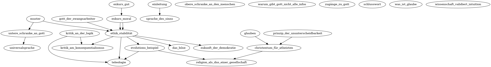

Da es mir schwierig erschein im Vornherein zu wissen, welchen Ablauf ein Buch hat, schreibe ich dieses in Form einer Webseite. Der Sinn darin ist, dass ich einfach einen Link zu einem neuen Gedanken beginnen kann, wenn es zu einem Thema passt. Ich kann dann im nachhinein eine zum Lesen möglichst angenehme Reihenfolge wählen. Einige Themen hängen voneinander ab, also muss man erst das eine Thema gelesen haben um das nächste völlig zu verstehen. Die Abhängigkeit habe ich in dem folgenden Graphen gezeigt.
Ich höre gerne philosophische und theologische Diskusionen und Podcasts. Eine Frage die dort immer wieder aufgetaucht ist, ist die des Seins und Sollens. Wie kann man aus Sein Sollen herleiten. Also wie kann ich entscheiden aus all dem was ist, was in Zukunft sein soll. Wie kann ich aus Materie Sinn herleiten? An dieser Frage scheiterten meist die Atheisten und es ist der kleine Triumpf der Theologen. Und natürlich bauen diese dann ihre Argumentationen oft genau darauf auf.
Sam Harris, einer der bekanntesten Atheisten, begründet die Grundlage seiner Ethik: Stell dir das grösst mögliche Leid für so viele Menschen wie möglich vor. Wir können uns doch einigen, dass dies schlecht ist. Das Ziel ist es also, so weit wie möglich von dieser Position weg zu geraten. Doch woher nimmt er, dass dieses grösst mögliche Leid so schlecht ist? Wie weiss er das? Vorallem hat der einfach das Wort: Böse oder Schlecht mit Leid ersetzt. Das gibt keine zusätzliche Schlagkraft. Er sagt nur, dass schlechte Dinge schlecht sind. Warum aber etwas als schlecht zählt, geht aber nicht daraus hervor. Also aus meiner Sicht scheitert er genau daran. Aus der physikalischen Welt gut und böse extrahieren zu können. Er gibt das auch selbst zu. Ja er könne nicht aus Sein Sollen herleiten, aber aus einem Soll kann er ganz viele andere Solls herleiten. Wenn wir uns einigen, dass Leid so schlecht ist, dann können wir den ganzen Rest daraus herleiten ohne Religion.
Ich starte hier den Versuch, Gut und Böse aus der physikalischen Welt herzuleiten. Dadurch ergibt sich somit auch ein Sollen. Doch obwohl ich aus Sein Sollen herleiten werde ist meine Absicht nicht gegen Religion. Im Gegenteil. Diese Gedankengänge sind mein Versucht meinen wachsenden Zweifel an meinem Glauben und an Gott zu begegnen. Ich hielt eine mir lange erscheinende Zeit mehrere Sichtpunkte gleichzeitig die Widersprüchlich waren. (atheistische und religiöse) Ich hielt sie bewusst und mir graute davon eine der beiden abzulegen, denn sie beide bedeuteten mir die Welt. Die atheistische Ansicht war kurz gefasst: All diese Geschichten konnten so nicht passiert sein wie in der Bibel beschrieben und es gibt andere Erklärungen für die Entstehung der Bibel und auch für die beschriebenen Wunder. Andere Religionen haben die genau gleichen Erlebnisse und diese können alle psychologisch erklärt werden. Dabei war mir wichtig, dass sich Dinge nicht widersprechen durften. Innerhalb meiner religiösen Gruppe wurden Widersprüche oft mich billigen Floskeln abgetan.
Mein Glaube und die Diskussionen in meinem Umfeld gaben mir auf intellektueller Eben nicht viel. Sie ware platt und nicht auf dem Niveau wie meine atheistischen Gedanken. Aber meine religiöse Sicht gab mir Wert, Halt und eine inner Sicherheit. Und die Texte der Bibel "sprachen" oft zu mir. Ich hatte so zusagen eine persönliche Beziehung mit Gott und zur Schrift die von diesem Gott handelt.
Ich war nicht bereit eine der beiden Ansichten aufzugeben. Was füllt die Leere die Gott jetzt füllt wenn ich ihn verlasse? Und was verlässt mich überhaupt, wenn es doch Gott nicht gibt? Zu wem habe ich eine Beziehung, wenn es Gott nicht gibt?
Was mich also rumtreibt sind die grossen Fragen der Philosophie. Ich glaube meine Ansicht, im Speziellen meine Ethik, schaft eine Basis wie man innerhalb einer Weltanschauung (Christentum, Atheismus) diskutieren kann. Und auch wie man Gut und Böse unterscheiden könnte. Aber ich glaube auch, dass meine Ethik den Dialog zwischen Weltanschauungen fördern kann. Den Dialog, den ich in meinem Kopf habe: Zwischen meinem inneren Atheisten und dem inneren Theisten, kann auch interpersonal gemacht werden.
Der ungefähre Ablauf wird wiefolgt sein: Erste werde ich ein paar Konzepte einführen, dann werde ich aus einem neuen Blickwinkel auf Religion werfen, dann kommen wir auf meine Ethik, diese werde ich mit einigen Beispielen veranschaulichen. Auf dieser Gundlage werde ich dann, Religion, Gesellschaft aber auch den Konsequentialismus und die Logik betrachten. In wievielen Episoden dies geschieht ist mir zu diesem Zeitpunkt noch nicht klar. Aber wir starten jetzt mit einem Gedanken was gut ist?